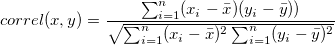

This function returns the correlation coefficient between two datasets. Let X and Y be two datasets, then the correlation coefficient between the two is defined as:

double correl(dataset vx, dataset vy)
vx
vy
Returns the correlation coefficient between two datasets vx and vy.
newbook; range aa = 1!1; range bb = 1!2; aa = uniform(32); bb = uniform(32); correlation = correl(aa,bb); correlation = ;